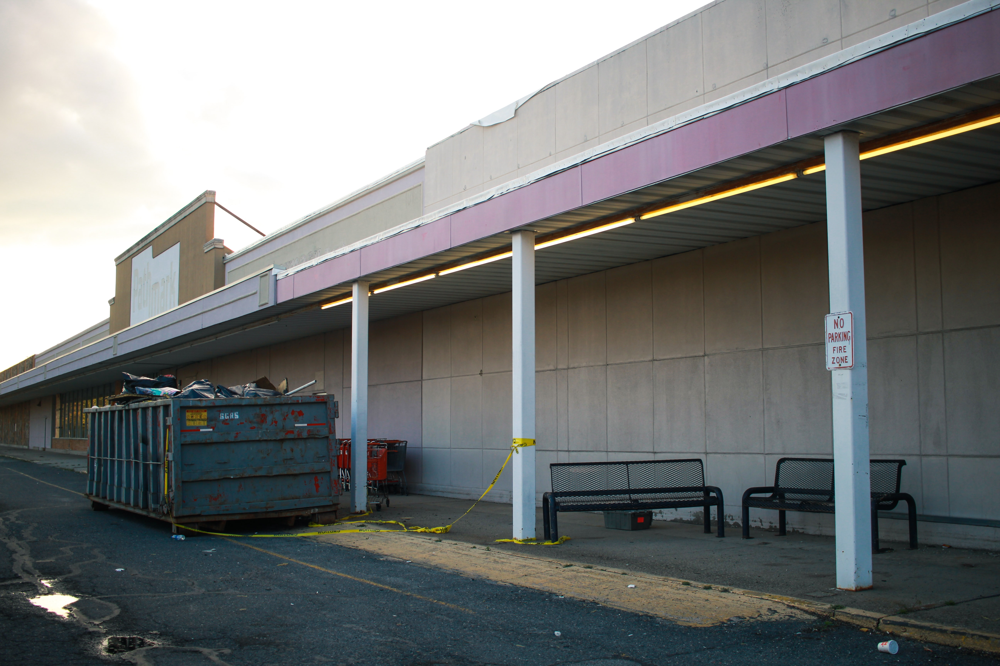

창고는 재화(財貨)의 보관을 위해 시설된 건물 또는 설비.
창고는 재화의 보관을 위해 존재한다. 재화의 보관이란 재화를 저장하고, 관리함으로써 유통의 시간적인 조절을 도모하는 것을 말한다. 수송이 재화의 장소적 이전에 의해 재화의 가치를 증대하는 것에 대해, 보관은 생산과 소비를 시간적으로 조절함으로써 재화의 가치를 증대시킨다. 예를 들면, 농산물과 같이 수확하는 것은 일정한 기간이고, 소비가 1년 동안 계속되는 것은 보관이 필요하게 된다. 곡물 등은 생산지의 농업창고에서 공공적 검사제도에 의해 등급별로 분류되어 해당창고에 보관된다. 공업제품에서도 계절적인 상품(선풍기 등)을 연간 평균적으로 생산한다고 하면 보관하지 않을 수 없다. 또 대량생산의 소량단위운송, 소량생산의 대량상품화, 과잉생산물의 가격유지 등을 위해서도 재화의 보관이 필요하다. 효율적인 재화 보관을 위해 창고는 수륙교통이 편리하고, 각종 화물의 교류와 매매가 성행하는 곳, 철도의 교차점, 개항지(開港地)·대도시 등에 있어야 한다. [네이버 지식백과] 창고 [warehouse, 倉庫] (두산백과)